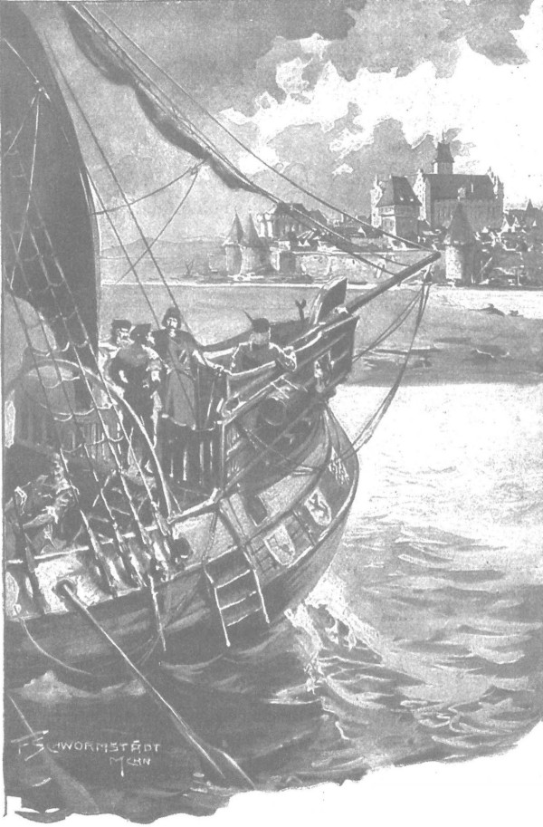

Họ đi dọc con đường khô ráo dẫn từ Chełmża đến Grudziạdz, nơi họ dừng chân nghỉ đêm và cả một ngày sau đó vì đại thống lĩnh phải phân xử tranh chấp về đánh cá giữa viên quản thành của Giáo đoàn Thánh chiến và giới lãnh chúa địa phương, chủ của những vùng đất đai liền kề sông Wisla. Từ đó, họ đi trên những thuyền đáy bằng của Giáo đoàn xuôi theo dòng sông về tận thành Malborg. Các hiệp sĩ Zyndram xứ Maszkowice, Powała xứ Taczew và Zbyszko luôn ở bên cạnh đại thống lĩnh, người rất muốn biết ấn tượng của các hiệp sĩ, đặc biệt là ông Zyndram, khi được tận mắt thấy lực lượng của quân Thánh chiến. Đại thống lĩnh muốn biết điều đó bởi vì ngài Zyndram xứ Maszkowice không chỉ là một hiệp sĩ can trường và cực kỳ dũng mãnh trong các cuộc đấu tay đôi, mà còn là một chiến binh vô cùng sắc sảo. Trong toàn vương quốc, không một ai như ông có kiến thức về việc chỉ huy những đội quân lớn, việc chuẩn bị cho các đội tinh binh xáp chiến, việc xây cất hay phá hủy các lâu đài, việc bắc cầu qua sông lớn, cũng như hiểu rõ trang bị vũ khí của các quốc gia khác nhau và nắm vững tất cả phương cách chinh chiến. Biết hội đồng hoàng gia phụ thuộc nhiều vào ý kiến của vị hiệp sĩ này, đại thống lĩnh nghĩ rằng nếu có thể khiến ông e ngại trước quy mô tài sản và quân sự của Giáo đoàn, thì cuộc chiến sẽ có thể được trì hoãn thêm một thời gian dài nữa. Trên hết, chỉ riêng quang cảnh thành Malborg đã có thể khiến mọi trái tim Ba Lan e sợ, bởi lẽ không một thành đô nào khác trên đời có thể sánh nổi với thành này, tính cả Thượng Thành, Trung Thành và Tiền Thành [230] . Ngay từ khi đi thuyền trên dòng Nogat [231] , các hiệp sĩ đã trông thấy từ xa những tòa tháp cao sừng sững nổi bật trên nền trời. Ngày rất sáng sủa, nên có thể ngắm nhìn nó một cách hoàn hảo, và lát sau, khi đoàn thuyền tiến lại gần, càng trông rõ các đỉnh chóp nhà thờ trên Thượng Thành và những bức tường thành khổng lồ chồng chất lên nhau - một phần mang màu gạch, song phần lớn được trát bằng loại vữa màu trắng xám nổi tiếng - sản phẩm mà chỉ đám thợ hồ của Giáo đoàn Thánh chiến biết làm. Sự đồ sộ của thành đô vượt xa tất cả những gì các hiệp sĩ Ba Lan từng thấy trong đời. Nơi ấy, ngỡ như các tòa nhà mọc bên trên các tòa nhà, tạo nên một ngọn núi ở nơi đất vốn trũng thấp mà đỉnh là Thượng Thành, còn các sườn dốc là Trung Thành và Tiền Thành rộng lớn. Từ cái tổ khổng lồ của các tu sĩ vũ trang toát ra quyền uy và sức mạnh phi thường đến nỗi khuôn mặt dài ngoẵng, thường ảm đạm của đại thống lĩnh cũng rạng lên phần nào.

Họ đi trên những thuyền đáy bằng của Giáo đoàn, xuôi theo dòng sông về tận thành Malborg
- Ex luto Marienburg - thành Marienburg từ bùn, - đại thống lĩnh nói với hiệp sĩ Zyndram, - nhưng thứ bùn ấy không sức người nào phá nổi.
Hiệp sĩ Zyndram không trả lời - ông im lặng đưa mắt ngắm toàn cảnh những tòa thành và vẻ đồ sộ của các bức tường thành được chống đỡ bởi những sườn dốc có hình thù quái dị.
Đại thống lĩnh Konrad von Jungingen hỏi thêm sau một khoảnh khắc im lặng:
- Là người hiểu biết về thành quách, ngài nghĩ sao về tòa thành này?
- Thành trì có vẻ bất khả xâm phạm, - vị hiệp sĩ Ba Lan nói như đang suy ngẫm, - nhưng…
- Nhưng sao? Ngài có điều gì chê trách?
- Nhưng mọi thành trì đều có thể đổi chủ.
Nghe thấy thế, đại thống lĩnh chau mày.
- Ý ngài định nói gì?
- Ý tôi nói là phân xử và phán xét của Thiên Chúa đều vô hình trong mắt người thường.
Rồi ông lại trầm ngâm ngắm nhìn bức tường thành, còn Zbyszko, được hiệp sĩ Powała dịch cho nghe câu trả lời, nhìn ông với sự ngưỡng mộ và lòng biết ơn. Cũng đến lúc này, chàng mới chợt nhận ra sự giống nhau giữa hiệp sĩ Zyndram và quận công Skirvvoiłło - thủ lĩnh của quân Żmudź. Cả hai đều có cái đầu to tướng, như bị kẹt giữa hai cánh tay dài, hai vồng ngực mạnh mẽ và đôi chân vòng kiềng hệt như nhau.
Trong khi đó không muốn để các hiệp sĩ Ba Lan nói lời cuối, đại thống lĩnh lại khơi mào.
- Người ta bảo, - ông nói, - thành Marienburg của chúng tôi lớn gấp sáu lần cung điện Wawe!
- Nơi đó là núi đá, không có nhiều đất rộng như vùng bình nguyên ở đây, - hiệp sĩ xứ Maszkowice nói, - nhưng còn trái tim thì tôi thấy cung Wawel của chúng tôi lại lớn hơn.
Đại thống lĩnh Konrad nhướn mày ngạc nhiên:
- Tôi không hiểu.
- Thì trái tim của mỗi tòa thành là gì nếu không phải nhà thờ? Nhà thờ lớn của chúng tôi to gấp ba cái nhà thờ này.
Nói thế, ông chỉ cái nhà thờ quả thực nhỏ bé của thành, mà ở thánh điện của nó là bức tranh khảm Đức Mẹ Đồng Trinh đang tỏa sáng trên nền vàng.
Đại thống lĩnh lại một lần nữa không hài lòng với diễn biến câu chuyện.
- Ngài có câu trả lời nhanh, nhưng rất lạ đấy, thưa ngài. - Ông nói.
Vừa lúc ấy họ đến nơi. Chắc dám quân cảnh nổi danh của Giáo đoàn đã báo trước cho thành phố và lâu đài về sự trở về của đại thống lĩnh, nên ngay đầu bến, bên cạnh các đồng đạo, đã có mặt những nhạc công chơi kèn của thành đô, thường nổi nhạc chào mừng đại thống lĩnh trở về sau những chuyến viễn hành. Bên kia đường, ngựa đã chờ sẵn, họ lên ngựa, cả đoàn tiến vào thành phố qua cổng Szewska, theo đường tháp Wróbley, đến Tiền Thành. Tại cổng thành, nghênh đón đại thống lĩnh có tổng lãnh binh Wilhelm von Helíenstein - người mà thực ra chỉ còn chức tước trên danh nghĩa, vì đã vài tháng nay, nhiệm vụ của ông được Kuno Lichtenstein đảm nhiệm, nhưng hiện ông này đang đi sứ sang Anh quốc; ngoài ra có chánh quản quân y Konrad Lichtenstein - một người họ hàng của hiệp sĩ Kuno, chánh quản quân nhu [232] Rumpenheim, chánh quản ngân khố Burghard von Wobecke, cuối cùng là một quản thành nhỏ chuyên chỉ huy các công xưởng và quản lý tòa thành. Ngoài những quan chức ấy, còn có mấy chục đồng đạo được tấn phong, điều hành công việc nhà thờ tại Phổ, áp chế rất hà khắc các tu viện và giáo sĩ thế tục, thậm chí buộc họ phải lao động như phu lục lộ dọn dẹp băng tuyết; cùng với họ là một nhóm các đồng đạo thế tục - những hiệp sĩ không bị bó buộc tuân theo quy tắc của Giáo hội. Tầm vóc cao to và cường tráng của họ (Giáo đoàn Hiệp sĩ Thánh chiến không chấp nhận những kẻ yếu ớt), đôi vai rộng, hàm râu quai nón và ánh mắt sắc lạnh khiến họ giống những hiệp sĩ cướp đường người Đức [233] hơn là tu sĩ. Đôi mắt họ toát ra sự can trường, cứng rắn và niềm tự tôn vô song. Họ không thích Konrad vì ông e ngại cuộc chiến với đức vua Jagiełło hùng mạnh; nhiều khi tại các đơn vị, họ công khai chỉ trích sự nhút nhát của ông, vẽ hình ông lên tường và ngầm xúi giục những người qua đường chế nhạo ông. Tuy nhiên, khi thấy ông đến, họ lại cúi đầu tỏ vẻ khiêm nhường, nhất là khi thấy đại thống lĩnh cưỡi ngựa trong đoàn các hiệp sĩ ngoại quốc, họ vội lao tới nắm dây cương và đây hàm thiếc để kìm giữ ngựa cho ông.
Đại thống lĩnh xuống ngựa, quay ngay sang hỏi Helfenstein:
- Có tin gì của Werner von Tettingen không?
Werner von Tettingen là đại thống chế, thống lĩnh các lực lượng vũ trang Thánh chiến, đang đi chiến dịch chống lại quân Żmudź và đại quận công Witold.
- Thưa, không có tin gì quan trọng, - Helfenstein trả lời, - nhưng có những thiệt hại. Bọn dân man di đã đốt các khu dân cư tại Ragneta và các thị trấn gần một số thành trì khác.
- Hy vọng ở Chúa, một trận đại chiến sẽ phá tan lòng căm hận sắt đá của chúng. - Đại thống lĩnh nói.
Khi nói điều này, ông ngước mắt lên trời, môi mấp máy hồi lâu cầu nguyện cho sự thành công của Giáo đoàn.
Rồi ông chỉ các hiệp sĩ Ba Lan và bảo:
- Đây là các vị đặc sứ của đức vua Ba Lan: hiệp sĩ xứ Maszkowice, hiệp sĩ xứ Taczew và hiệp sĩ trang Bogdaniec, họ đến chỗ chúng ta để trao đổi tù binh. Quản thành hãy đưa họ đến phòng khách, tiếp đãi và đối xử với họ cho xứng đáng.
Nghe thấy thế, các hiệp sĩ đồng đạo tò mò nhìn các đặc sứ, nhất là hiệp sĩ Powała xứ Taczew, với tên tuổi là một đấu sĩ nổi tiếng đã được nhiều người biết đến. Những ai chưa được nghe về ông tại các triều đình Burgundia, Séc và Kraków, thì cũng bị thu hút bởi thân hình cao lớn của ông và con chiến mã lực lưỡng, khiến những ai đã viếng thăm Đất Thánh và Ai Cập bất giác nghĩ đến lạc đà và voi đã thấy tại đó trong những năm tuổi trẻ.
Một số người nhận ra Zbyszko là đấu sĩ trên các võ đài ở thành Malborg, họ lịch thiệp chào chàng, vì nhớ rằng hiệp sĩ hùng mạnh và lừng danh của Giáo đoàn, Ulryk von Jungingen, em trai của đại thống lĩnh, đã đối xử với chàng thân hữu và ưu ái. Người ít được chú ý trầm trồ nhất là hiệp sĩ Zyndram xứ Maszkowice, vị hiệp sĩ mà trong tương lai sẽ trở thành kẻ chinh phục khủng khiếp nhất của Giáo đoàn, vì khi ông xuống ngựa, do người thấp đậm và đôi tay dài quá khổ, trông ông như thể bị gù. Cánh tay dài và đôi chân vòng kiềng của ông khiến vài đồng đạo trẻ bật cười. Thậm chí một kẻ nổi tiếng hay pha trò trong bọn còn tiến lại gần định nói lời ác ý, nhưng khi nhìn vào mắt hiệp sĩ xứ Maszkowice, y liền cụt hứng và im lặng bỏ đi.
Viên quản thành mời khách và đưa họ đi cùng. Họ bước vào khoảng sân nhỏ, nơi ngoài trường học, một nhà kho cũ kỹ và xưởng làm yên cương, còn có nhà nguyện Thánh Mikołaj, rồi qua cầu Mikołajski, họ bước đến Tiền Thành. Viên quản thành dẫn họ đi giữa những bức tường cao vút, đây đó điểm xuyết những tòa tháp lớn nhỏ. Hiệp sĩ Zyndram xứ Maszkowice chăm chú quan sát kỹ mọi thứ, còn người dẫn đường, dẫu không ai hỏi, vẫn háo hức khoe các tòa dinh thự khác nhau, như thể muốn khách hiểu được mọi điều chi tiết nhất có thể.
- Tòa nhà lớn trước mặt mà quý vị thấy ở bên trái, - y nói, - là chuồng ngựa của chúng tôi. Chúng tôi chỉ là những kẻ tu hành nghèo, nhưng người ta thường nói nhà cửa của hiệp sĩ nơi khác cũng không được như trại ngựa của chúng tôi.
- Không ai nghi ngờ các ông về cái nghèo đâu, - hiệp sĩ Powała nói, - nhưng nơi đây chắc phải có một thứ gì đó khác trại ngựa, bởi tòa nhà rất cao, và chắc các ông không muốn lũ ngựa phải leo cầu thang.
- Chuồng ngựa ở bên dưới, nơi chứa bốn trăm con, - viên quản thành nói, - còn bên trên là những vựa ngũ cốc, chứa lương thực đủ dùng cho cả mười năm. Chúng tôi không bao giờ bị vây, nhưng nếu có, chúng tôi sẽ không bị đói.
Nói xong, y rẽ phải và qua cây cầu bắc giữa tháp Thánh Wawrzyniec và tháp Panzerna, đưa họ vào một cái sân rộng lớn, nằm chính giữa Tiền Thành.
- Xin quý ngài lưu ý, - gã người Đức nói, - tất cả những gì quý ngài trông thấy về phía bắc, mặc dù nhờ ơn Thiên Chúa là chốn không thể bị chinh phục, vẫn mới chỉ là Tiền Thành - mà về độ vững chắc thì không thể sánh nổi với Trung Thành, nơi tôi sẽ đưa quý vị tới, chứ chưa nói đến Thượng Thành.
Một con hào sâu và cây cầu rút chia cắt Trung Thành với sân trong, và khi tới cổng lâu đài, nằm ở vị thế cao hơn, theo lời khuyên của viên quản thành, các hiệp sĩ ngoảnh đầu lại, và họ thấy toàn cảnh khu đất hình vuông khổng lồ được gọi là Tiền Thành. Nơi ấy các tòa nhà chen chúc nhau, mọc ken sát vào nhau, khiến hiệp sĩ Zyndram ngỡ như cả một thành phố ở trước mắt. Tại đó có những kho gỗ vô tận được xếp chồng lên nhau thành từng lớp, cao như những tòa nhà, những kho đạn đá xếp thành hình kim tự tháp vươn cao, bên các nghĩa địa, quân y viện, nhà kho. Nằm hơi lệch sang một bên, dọc theo cái ao nước, nổi bật những bức tường đồ sộ của một tòa nhà màu đỏ, là một nhà kho lớn có nhà ăn cho lính đánh thuê và kẻ hầu người hạ. Dưới bờ kè phía bắc, có thể thấy những tàu ngựa khác dành cho ngựa của các hiệp sĩ và cho các chức sắc được tấn phong. Dọc theo cối xay chạy bằng sức nước là doanh trại cho các hộ vệ và lính đánh thuê, còn ở phía đối diện của những căn nhà hình tứ giác dành cho các chức sắc và viên chức tôn giáo khác là các nhà xưởng, kho dự trữ, lò bánh mì, nhà giặt, xưởng đồ đồng [234] , một công binh xưởng lớn được gọi là Kanvan, nhà tù, một cơ xưởng pháo cũ [235] , tất cả đều rất kiên cố và được phòng thủ đến mức có thể tự vệ như một tòa thành độc lập, toàn bộ lại được bao quanh bởi một tường thành với nhiều tháp canh lô nhô, phía ngoài tường là hào sâu, tiếp sau là một vòng cung khổng lồ của hàng rào cọc chống, tiếp đó về phía tây mới tới những con sóng màu vàng của dòng sông Nogat, phía bắc và phía đông lóng lánh mặt nước của những vùng đầm hồ rộng lớn, còn phía nam vươn cao sừng sững các tòa thành còn kiên cố và vững chãi hơn: Trung Thành và Thượng Thành.
Cái hang ổ khủng khiếp ấy toát ra một sức mạnh không dung thứ, nơi tập trung hai thế lực mạnh nhất thế gian thời đó: thế lực của tôn giáo và thế lực của lưỡi kiếm. Ai chống lại thế lực này, sẽ bị thế lực kia đè bẹp. Bất cứ ai dám giơ tay chống lại, mọi quốc gia Ki-tô giáo sẽ đều gào lên rằng hắn dám to gan chống lại thánh giá.
Và giới hiệp sĩ từ khắp bốn phương sẽ kéo về đây để hỗ trợ. Hang ổ này cũng luôn đông đúc các đám thợ thủ công cùng cư dân có vũ trang, và luôn sôi động như một đõ ong. Trước các tòa nhà, trên các lối đi, tại các cổng thành, trong các cơ xưởng - mọi nơi đều nhộn nhịp như hội chợ. Đanh đanh tiếng búa và tiếng đục đẽo tròn những viên đạn đá, rầm rầm tiếng cối xay và rậm rịch tiếng bước chân, lanh lảnh tiếng ngựa hí dài, lách cách tiếng giáp sắt và khí giới chạm nhau, véo von tiếng kèn và tiếng sáo, gióng giả những mệnh lệnh và tiếng kêu gọi. Ở những mảnh sân này, có thể nghe thấy mọi thứ ngôn ngữ của thế giới, có thể gặp mọi chủng chiến binh: không thiếu mặt các cung thủ người Anh bách phát bách trúng, có thể xuyên một con chim bồ câu đậu trên cột buồm cách xa trăm bước, với những mũi xạ tiễn có thể xuyên thủng áo giáp dễ dàng như xuyên qua tấm vải mỏng; những lính bộ Thụy Sĩ kiêu hùng có thể múa song kiếm chiến đấu; những người lính Đan Mạch can trường dẫu ăn uống vô độ; các hiệp sĩ người Pháp hay cười nhưng cũng hay gây sự; đám quý tộc Tây Ban Nha kiệm lời và kênh kiệu; các hiệp sĩ Ý tuyệt vời, những kiếm sĩ điệu nghệ nhất, thường ngày vận phục trang nhung lụa, nhưng khi chinh chiến lại mặc những bộ giáp phục chắc chắn nhất được chế tạo tại Venice, Milan và Horence; có cả các hiệp sĩ xứ Burgundia và những người Fryzja, cuối cùng là người Đức từ tất cả các vùng đất Đức. Len lỏi giữa đám hiệp sĩ ấy là những người khoác áo choàng trắng với tư cách là chủ nhà hay thượng cấp. “Tòa tháp đầy vàng”, hay chính xác hơn là một phòng đặc biệt được xây dựng trong Thượng Thành, sát với phòng đại thống lĩnh, từ sàn đến trần nhà chất ngất tiền bạc và những thỏi kim loại quý, để Giáo đoàn tiếp đãi xứng đáng các vị khách, cũng như để thu hút bọn lính đánh thuê, được phái đi chinh phạt các thành trì, và để điều khiển những kẻ cầm đầu các đơn vị địa phương, các chỉ huy và lãnh binh. Đó là cách thức kết nối sức mạnh của lưỡi gươm và sức mạnh của tôn giáo, gắn kết khối tài sản vô lượng với cái trật tự thép, dẫu ở các tỉnh trấn đã bị buông lỏng do quá tự tin và quá say sưa với sức mạnh của chính nó, vẫn còn được duy trì chặt chẽ tại thành Malborg bằng sức mạnh của kỷ cương xưa. Các vị quân vương đến đây không chỉ để chiến đấu chống quân ngoại đạo hoặc để vay mượn tiền, mà còn để học nghệ thuật trị quốc; còn giới hiệp sĩ đến đây để học nghệ thuật chiến chinh, bởi trên toàn thế giới không ai giỏi cai trị và chiến đấu bằng Giáo đoàn. Hồi trước, khi mới đến đây, ngoại trừ một địa giới nhỏ nhoi và một vài tòa lâu đài được một quận công Ba Lan bất cẩn trao tặng, Giáo đoàn không có lấy một tấc đất [236] cắm dùi, thế mà giờ đây nó cai trị cả một vùng mênh mông, rộng lớn hơn bao vương quốc khác, với cơ man đất đai phì nhiêu, những thành đô hùng mạnh và những lâu đài bất khả chinh phục. Giáo đoàn cai trị và canh giữ hệt một con nhện độc canh giữ cái mạng nhện đã giăng ra, canh giữ từng đường tơ sợi chỉ một. Từ chốn này, từ Thượng Thành, từ đại thống lĩnh và những tấm áo choàng trắng, mệnh lệnh được các lính hỏa bài truyền đi khắp bốn phương: các lãnh chúa phong kiến, các hội đồng thành phố, các đô trưởng, các đầu lĩnh, nhóm trưởng và đội trưởng lính đánh thuê, mỗi quyết định và ý chí sinh ra ở đây sẽ sớm được hàng trăm, hàng ngàn bàn tay thép nơi kia thực thi. Từ khắp miền đất nước chảy tràn về đây tiền của, ngũ cốc, đủ thứ đồ ăn thức uống, cống vật từ các giáo sĩ thế tục đang rên rỉ dưới ách thống trị hà khắc và từ các tu viện khác mà Giáo đoàn vẫn theo dõi bằng con mắt bất ưng; và sau rốt, từ đây, những cánh tay thèm muốn vươn tới mọi quốc gia và chủng tộc láng giềng.
Nhiều vùng đất của các cư dân Phổ nói tiếng Litva đã bị chinh phục. Gần đây, Litva cảm thấy rõ bàn chân thép của các hiệp sĩ Thánh chiến giẫm lên ngực, nặng nề kinh khủng đến mức mỗi hơi thở tức nghẹn như muốn ứa máu con tim. Ba Lan, dù đã thắng trong trận chiến kinh hoàng tại Plowce, nhưng từ thời vua Lokietkowy đệ nhất đã chịu mất quyền nắm giữ vùng hữu ngạn sông Wisła cùng các thành phố Gdańsk, Taczew, Gniew và Świecie. Giáo đoàn Hiệp sĩ Thánh kiếm đã vươn tới vùng đất Nga, và cả hai giáo đoàn là những con sóng khổng lồ đầu tiên của mặt biển Đức tràn vào vùng đất Slav mỗi lúc một sâu và rộng hơn.
Bỗng mây đen bất ngờ che khuất mặt trời hưng thịnh của trục Thánh chiến - Đức. Litva đã chịu nhận phép rửa tội từ tay Ba Lan và vua Jagiełło tiếp nhận ngai vàng của Kraków cùng với bàn tay của vị nữ hoàng xinh đẹp tuyệt vời. Dẫu không mất một mảnh đất hay thành trì nào, nhưng Giáo đoàn cảm thấy đã hình thành một sức mạnh đáng gờm chống lại mình và đã mất đi nguyên cớ tồn tại ở đất Phổ. Sau lễ rửa tội của Litva, có lẽ Giáo đoàn nên trở về xứ Palestine để bảo vệ những người hành hương đang hướng về Đất Thánh. Nhưng trở về có nghĩa là từ bỏ sự giàu có, chính quyền, quyền lực, sự cai trị các thành phố, các vùng đất và toàn bộ các vương quốc. Thế là Giáo đoàn bắt đầu giãy giụa trước nỗi sợ hãi và điên giận như con rồng quái dị đã bị đầu mũi tên găm vào sườn. Đại thống lĩnh Konrad sợ đặt mọi thứ vào vận may rủi, ông run rẩy khi nghĩ đến cuộc chiến với một vị vua hùng mạnh, người thống trị cả Ba Lan, Litva và những vùng đất Nga rộng lớn, mà thời Olgierd đã cướp lại từ tay bọn Tatar, song hầu hết các hiệp sĩ của Giáo đoàn Thánh chiến lại muốn quyết đấu một trận sinh tử, khi lực lượng vẫn còn nguyên vẹn, khi sự quyến rũ của dòng tu vẫn chưa phai nhạt, khi thế giới vẫn sẵn sàng trợ giúp, và khi sấm sét của Giáo hoàng chưa trút xuống hang ổ của chúng; lúc này đây vấn đề sống còn không phải là mở rộng vùng đất Ki-tô giáo, mà là ngừng mở rộng vùng đất ngoại giáo.
Trong khi đó tại các vương quốc và các thành bang lan truyền tin đức vua Jagiełło và Litva làm lễ rửa tội giả, chỉ là hình thức, vì không thể nào chỉ trong một năm lại có thể thực hiện được điều mà suốt nhiều thế kỷ, thanh gươm của Giáo đoàn không thể làm nổi. Họ dấy loạn chống lại Ba Lan, chống lại người cai trị các ngai vàng và giới hiệp sĩ, như chống lại kẻ bảo vệ và che chở cho dân ngoại giáo. Những dư luận này không tới được thành Roma, nhưng đã lan rộng khắp thế giới, thu hút về thành Malborg các vương tôn, giới quý tộc, hiệp sĩ từ miền nam và miền tây. Giáo đoàn lại tự tin và lại cảm nhận quyền lực. Marienburg với những lâu đài ghê gớm và khu Tiền Thành đầy sức mạnh lại khiến người ta choáng ngợp hơn bao giờ hết, và quáng mắt vì sự giàu có, lóa mắt vì thứ trật tự bề ngoài, Giáo đoàn dường như mạnh hơn và bất khả chinh phục so với những kỷ nguyên trước đây. Không một ai trong số các vương công, không một ai trong số các hiệp khách, không một ai trong các hiệp sĩ Thánh chiến - ngoại trừ đại thống lĩnh - hiểu ra rằng kể từ lễ rửa tội của Litva, đã xảy ra một điều gì đó giống như những làn sóng của sông Nogat, dẫu một mặt vẫn che chắn cho cái tòa thành khủng khiếp này, nhưng mặt khác đã bắt đầu xói mòn bức tường thành của nó. Không một ai hiểu ra rằng cái cơ thể đồ sộ ấy vẫn còn nhiều sức mạnh, nhưng linh hồn thì đã lìa xa. Kẻ nào mới đến lần đầu, nhìn cái thành Marienburg ex luto hùng vĩ, cao vòi vọi này, nhìn những bức tường thành, những tòa tháp, những cây thập giá màu đen ở các cổng thành, trên các tòa nhà và trên những tấm áo choàng, hẳn đều nghĩ rằng cổng địa ngục sẽ không thể thắng nổi cái kinh đô phương bắc này của thánh giá. [237]
Không chỉ riêng hiệp sĩ Powała xứ Taczew và Zbyszko, những người đã từng đến đây ngày trước, mà ngay cả hiệp sĩ Zyndram xứ Maszkowice thông tuệ hơn họ, cũng có những suy nghĩ tương tự khi ngắm nhìn thành đô. Mặt ông sầm lại khi nhìn bầy đàn lính vũ trang được vây bọc trong cái khung của những tháp canh và những công trình khổng lồ, đầu óc ông bất giác hiện ra những lời đầy ngạo nghễ mà các hiệp sĩ Thánh chiến đã từng de dọa vua Kazimierz: “Lực lượng của chúng ta mạnh hơn, nếu ngài không chịu nhượng bộ thì những lưỡi gươm của chúng ta sẽ săn đuổi ngài đến tận Kraków.”
Trong khi đó, viên quản thành đưa các hiệp sĩ đi tiếp, đến Trung Thành, nơi các phòng khách nằm về phía đông.